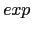
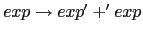
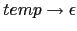
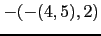
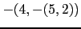
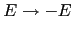
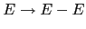
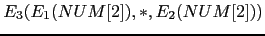

El generador de analizadores sintácticos Parse::Eyapp que
estudiaremos en las siguientes secciones funciona de manera similar
a un esquema de traducción. Las reglas de producción de la gramática
son aumentadas con reglas semánticas. Los símbolos que aparecen en la regla
de producción tienen atributos asociados y las reglas semánticas
dicen como deben ser computados dichos atributos.
Consideremos, por ejemplo, el siguiente fragmento de programa eyapp:
exp: exp '+' exp { $_[1] + $_[3] }
|
que dice que asociado con el símbolo  de la regla de producción  tenemos el atributo valor numérico y que para computar el atributo valor de la variable sintáctica en la parte izquierda tenemos que sumar los atributos asociados con los símbolos primero y tercero de la parte derecha.
Por defecto Parse::Eyapp no provee un esquema de traducción ya que - aunque el orden de
ejecucíon de las acciones es de abajo-arriba y de izquierda a derecha como en un esquema -
no es posible acceder a atributos de nodos que aún no han sido visitados.
Para ilustrar el uso de Parse::Eyapp veamos
un ejemplo en el que se implanta una gramática
cuyas frases son secuencias (separadas por retornos de carro)
de expresiones aritméticas.
Los contenidos del programa eyapp los hemos guardado
en un fichero denominado CalcSyntax.eyp
Un programa eyapp consta de tres partes:
Cada una de las partes va separada de las otras por el
símbolo %% en una línea aparte.
Así, el %% de la línea 8
separa la cabeza del cuerpo y el de la línea 31 el cuerpo de la cola.
eyapp
contiene las rutinas de soporte al código que aparece en las acciones
asi como, posiblemente, rutinas para el análisis léxico
y el tratamiento de errores.
pl@nereida:~/LEyapp/examples$ cat -n CalcSyntax.eyp
1 # CalcSyntax.eyp
2 %right '='
3 %left '-' '+'
4 %left '*' '/'
5 %left NEG
6 %right '^'
7
8 %%
9
10 input: line * { print "input -> line *\n" }
11 ;
12
13 line:
14 '\n' { print "line -> \\n\n" }
15 | exp '\n' { print "line -> exp \\n\n"}
16 ;
17
18 exp:
19 NUM { print "exp -> NUM ($_[1])\n"; }
20 | VAR { print "exp -> VAR ($_[1])\n"; }
21 | VAR '=' exp { print "exp -> VAR '=' exp\n"; }
22 | exp '+' exp { print "exp -> exp '+' exp\n"; }
.. . ....................................................
29 ;
30
31 %%
32
33 sub _Error {
.. ....................................
41 }
42
.. ......................................
44
45 sub _Lexer {
46 my($parser)=shift;
.. .................
58 }
59
60 sub Run {
61 my($self)=shift;
62
63 $input = shift;
64 return $self->YYParse( yylex => \&_Lexer, yyerror => \&_Error );
65 }
Todas las partes derechas de las reglas de producción de una misma variable sintáctica se escriben
juntas separadas mediante la barra vertical |.
10 input: line * { print "input -> line *\n" }
11 ;
12
13 line:
14 '\n' { print "line -> \\n\n" }
15 | exp '\n' { print "line -> exp \\n\n"}
16 ;
En este ejemplo hemos simplificado las acciones semánticas reduciéndolas a mostrar la regla de producción encontrada.
Un asterisco (como en la línea 10) indica repetición cero o mas veces de la expresión a la que se aplica. De hecho la línea 10 es casi equivalente a:
input: temp
;
temp:
/* vacio */
| temp line
;
Observe como en el código anterior hemos codificado la regla de producción  como:
temp:
/* vacio */
Es buena costumbre de programación
cuando se tiene una regla de producción que produce vacío
ponerla la primera del grupo y añadir un comentario como este.
Dado que vacío se representa en Eyapp mediante la cadena vacía
es fácil que pase desapercibida. Es por ello que se recomienda
que una regla vacía sea siempre la primera y que este comentada
como en el ejemplo.
Hay numerosas ambiguedades en esta gramática. Observe las reglas para los diferentes tipos de expresiones:
18 exp:
19 NUM { print "exp -> NUM ($_[1])\n"; }
20 | VAR { print "exp -> VAR ($_[1])\n"; }
21 | VAR '=' exp { print "exp -> VAR '=' exp\n"; }
22 | exp '+' exp { print "exp -> exp '+' exp\n"; }
23 | exp '-' exp { print "exp -> exp '-' exp\n"; }
24 | exp '*' exp { print "exp -> exp '*' exp\n"; }
25 | exp '/' exp { print "exp -> exp '/' exp\n"; }
26 | '-' exp %prec NEG { print "exp -> '-' exp\n"; }
27 | exp '^' exp { print "exp -> exp '^' exp\n"; }
28 | '(' exp ')' { print "exp -> '(' exp ')'\n"; }
29 ;
Surgen preguntas como:
4 - 5 - 2?
¿Como (4 - 5) - 2? ¿o bien 4 - (5 - 2)?
La respuesta la da la asignación de asociatividad a los operadores
que hicimos en la cabecera:
1 # CalcSyntax.eyp 2 %right '=' 3 %left '-' '+' 4 %left '*' '/' 5 %left NEG 6 %right '^' 7 8 %%
Las declaraciones %left y %right expresan la asociatividad y precedencia de los terminales, permitiendo decidir que árbol construir en caso de ambiguedad.
Los terminales declarados en líneas posteriores tienen mas prioridad que los declarados en las líneas anteriores.
Por defecto, una regla de producción tiene la prioridad del último terminal que aparece en su parte derecha.
Al declarar como asociativo a izquierdas al terminal -
hemos
resuelto la ambiguedad en 4 -5 -2. Lo que estamos haciendo es
indicarle al analizador que a la hora de elegir entre
los árboles abstractos

y

elija siempre
el árbol que se hunde a izquierdas.
¿Como debo interpretar la expresión 4 - 5 * 2?
¿Como (4 - 5) * 2? ¿o bien 4 - (5 * 2)?
Al declarar que * tiene mayor prioridad que - estamos
resolviendo esta otra fuente de ambiguedad. Esto es así pues
* fué declarado en la línea 11 y - en la 10.
Por tanto el árbol será -(4, *(5,2)).
La declaración de ^ como asociativo a derechas y con un nivel
de prioridad alto resuelve las ambiguedades relacionadas
con este operador:
18 exp:
.. ......................................................
28 | '(' exp ')' { print "exp -> '(' exp ')'\n"; }
-2^2?
¿Cómo (-2)^2? ¿o bien -(2^2)?
Una regla de producción puede ir seguida de una directiva
%prec la cual le da una prioridad explícita.
Esto puede ser de gran ayuda en ciertos casos de
ambiguedad.
26 | '-' exp %prec NEG { print "exp -> '-' exp\n"; }
¿Cual es la ambiguedad que surge con esta regla?
La ambiguedad de esta regla
esta relacionada con el doble significado
del menos como operador unario y binario: hay frases
como -y-z que tiene dos posibles interpretaciones:
Podemos verla como (-y)-z o bien como -(y-z).
Hay dos árboles posibles. El analizador, cuando este analizando
la entrada -y-z y vea el
segundo - (después de haber leído -y)
deberá escoger uno de los dos árboles.
¿Cuál?. El conflicto puede verse como una ``lucha'' entre
la regla exp: '-' exp la cual interpreta la frase como
(-y)-z y la segunda aparición del terminal -
el cuál ``quiere entrar'' para que gane la regla exp: exp '-' exp
y dar lugar a la interpretación -(y-z).
En este caso, las dos reglas

y

tienen, en principio
la prioridad del terminal -, el cual fué declarado en la
zona de cabecera:
1 # CalcSyntax.eyp 2 %right '=' 3 %left '-' '+' 4 %left '*' '/' 5 %left NEG 6 %right '^' 7 8 %%
La prioridad expresada explícitamente
para la regla por la declaración %prec NEG de la línea
41 hace que la regla tenga la prioridad
del terminal NEG y por tanto mas prioridad
que el terminal -. Esto hará que eyapp finalmente opte
por la regla exp: '-' exp dando lugar a la interpretación
(-y)-z.
Después de la parte de la gramática, y separada de la anterior
por el símbolo %%, sigue la parte en la que se
suelen poner las rutinas de apoyo. Hay al menos dos rutinas de apoyo que
el analizador sintáctico requiere le sean pasados como argumentos:
la de manejo de errores y la de análisis léxico.
31 %%
32
33 sub _Error {
34 exists $_[0]->YYData->{ERRMSG}
35 and do {
36 print $_[0]->YYData->{ERRMSG};
37 delete $_[0]->YYData->{ERRMSG};
38 return;
39 };
40 print "Syntax error.\n";
41 }
42
43 my $input;
44
45 sub _Lexer {
46 my($parser)=shift;
47
48 # topicalize $input
49 for ($input) {
50 s/^[ \t]+//; # skip whites
51 return('',undef) unless $input;
52
53 return('NUM',$1) if s{^([0-9]+(?:\.[0-9]+)?)}{};
54 return('VAR',$1) if s/^([A-Za-z][A-Za-z0-9_]*)//;
55 return($1,$1) if s/^(.)//s;
56 }
57 }
58
59 sub Run {
60 my($self)=shift;
61
62 $input = shift;
63 return $self->YYParse( yylex => \&_Lexer, yyerror => \&_Error );
64 }
El método Run
ilustra como se hace la llamada al método de análisis sintáctico
generado, utilizando la técnica de llamada con argumentos con nombre
y pasándole las referencias a las dos subrutinas (en Perl,
es un convenio que si el nombre de una subrutina comienza
por un guión bajo es que el autor la considera privada):
78 sub Run {
79 my($self)=shift;
80
81 $input = shift;
82 return $self->YYParse( yylex => \&_Lexer, yyerror => \&_Error );
83 }
El método YYData provee acceso a un hash que contiene los datos
que están siendo analizados.
La subrutina de manejo de errores _Error imprime
el mensaje de error proveído por el usuario, el cual, si existe, fué guardado en
$_[0]->YYData->{ERRMSG}.
51 sub _Error {
52 exists $_[0]->YYData->{ERRMSG}
53 and do {
54 print $_[0]->YYData->{ERRMSG};
55 delete $_[0]->YYData->{ERRMSG};
56 return;
57 };
58 print "Syntax error.\n";
A continuación sigue el método que implanta
el análisis léxico _Lexer.
45 sub _Lexer {
46 my($parser)=shift;
47
48 # topicalize $input
49 for ($input) {
50 s/^[ \t]+//; # skip whites
51 return('',undef) unless $input;
52
53 return('NUM',$1) if s{^([0-9]+(?:\.[0-9]+)?)}{};
54 return('VAR',$1) if s/^([A-Za-z][A-Za-z0-9_]*)//;
55 return($1,$1) if s/^(.)//s;
56 }
El bucle for constituye
en este caso una ''frase hecha'': el efecto es hacer que $_ sea un
alias de $input. Se simplifica la escritura (obsérvese que no es
necesario explicitar el operador de binding en las líneas 50-55,
no teniendo que escribir $input =~ s{^([0-9]+(?:\.[0-9]+)?)}{})
y que la computación será mas eficiente al acceder a través de $_ en vez de $input.
El bucle for ($input)
se ejecutará mientras la cadena
en $input no sea vacía, lo que ocurrirá cuando todos
los terminales hayan sido consumidos. sin embargo es un ''falso for'':
no hay iteración. El interior del bucle es ejecutado una sola vez en cada
llamada.
Eliminamos los blancos iniciales (lo que en inglés se conoce por trimming) y a continuación vamos detectando los números, identificadores y los símbolos individuales.
En primer lugar se comprueba la existencia de
datos. Si no es el caso, estamos ante el
final de la entrada.
Cuando el analizador léxico alcanza el final de la entrada
debe devolver la pareja ('',undef).
$input se
ve modificado aún cuando no aparece como variable para el binding en las líneas 50-54?
4 * 3 ' con blancos al final:
como termina el analizador léxico. ¿Funciona correctamente en ese caso?
Construimos el módulo CalcSyntax.pm a partir del fichero CalcSyntax.eyp
especificando la gramática, usando elejecutable eyapp:
pl@nereida:~/LEyapp/examples$ eyapp -m CalcSyntax CalcSyntax.eyp pl@nereida:~/LEyapp/examples$ ls -ltr | tail -3 -rw-r--r-- 1 pl users 1545 2007-10-24 09:03 CalcSyntax.eyp -rwxr-xr-x 1 pl users 329 2007-10-24 09:05 usecalcsyntax.pl -rw-r--r-- 1 pl users 7848 2007-10-24 09:36 CalcSyntax.pmEsta compilación genera el fichero
CalcSyntax.pm conteniendo el
analizador.
El script eyapp es un frontend al módulo Parse::Eyapp.
Admite diversas formas de uso:
Los sufijos .eyp io .yp son opcionales.
Nos muestra la versión:
pl@nereida:~/LEyapp/examples$ eyapp -V This is Parse::Eyapp version 1.081.
Nos muestra la ayuda:
pl@nereida:~/LEyapp/examples$ eyapp -h
Usage: eyapp [options] grammar[.yp]
or eyapp -V
or eyapp -h
-m module Give your parser module the name <module>
default is <grammar>
-v Create a file <grammar>.output describing your parser
-s Create a standalone module in which the driver is included
-n Disable source file line numbering embedded in your parser
-o outfile Create the file <outfile> for your parser module
Default is <grammar>.pm or, if -m A::Module::Name is
specified, Name.pm
-t filename Uses the file <filename> as a template for creating the parser
module file. Default is to use internal template defined
in Parse::Eyapp::Output
-b shebang Adds '#!<shebang>' as the very first line of the output file
grammar The grammar file. If no suffix is given, and the file
does not exists, .yp is added
-V Display current version of Parse::Eyapp and gracefully exits
-h Display this help screen
La opción -o outfile
da el nombre del fichero de salida. Por defecto toma el nombre de la gramática,
seguido del sufijo .pm. sin embargo, si hemos especificado la opción
-m A::Module::Name el valor por defecto será Name.pm.
La opción -m module
da el nombre al paquete o espacio de nombres o clase encapsulando el
analizador. Por defecto toma el nombre de la gramática. En el ejemplo anterior
podría haberse omitido. Sin embargo es necesaria cuando se esta desarrollando
un módulo con un nombre complejo. Construyamos una distribución con
h2xs:
$ h2xs -XA -n Calc::Syntax Writing Calc-Syntax/lib/Calc/Syntax.pm Writing Calc-Syntax/Makefile.PL Writing Calc-Syntax/README Writing Calc-Syntax/t/Calc-Syntax.t Writing Calc-Syntax/Changes Writing Calc-Syntax/MANIFESTAhora añadimos el fichero
.eyp en el directorio de
la librería y producimos el módulo Syntax.pm
al compilarlo. Para darle al paquete el nombre
Calc::Syntax usamos la opción -m:
$ cd Calc-Syntax/lib/Calc/
$ cp ~/LEyapp/examples/CalcSyntax.eyp .
$ eyapp -m Calc::Syntax CalcSyntax.eyp
$ head -12 Syntax.pm | cat -n
1 ###################################################################################
2 #
3 # This file was generated using Parse::Eyapp version 1.081.
4 #
5 # (c) Parse::Yapp Copyright 1998-2001 Francois Desarmenien.
6 # (c) Parse::Eyapp Copyright 2006 Casiano Rodriguez-Leon. Universidad de La Laguna.
7 # Don't edit this file, use source file "CalcSyntax.eyp" instead.
8 #
9 # ANY CHANGE MADE HERE WILL BE LOST !
10 #
11 ###################################################################################
12 package Calc::Syntax;
La opción que recomiendo para documentar el módulo es escribir
la documentación en un fichero aparte
Calc/Syntax.pod.
A continuación escribimos el programa cliente:
$ cd ../..
$ mkdir scripts
$ cd scripts/
$ vi usecalcsyntax.pl
$ cat -n usecalcsyntax.pl
1 #!/usr/bin/perl -w -I../lib
2 use strict;
3 use Calc::Syntax;
4 use Carp;
5
6 sub slurp_file {
7 my $fn = shift;
8 my $f;
9
10 local $/ = undef;
11 if (defined($fn)) {
12 open $f, $fn
13 }
14 else {
15 $f = \*STDIN;
16 }
17 my $input = <$f>;
18 return $input;
19 }
20
21 my $parser = Calc::Syntax->new();
22
23 my $input = slurp_file( shift() );
24 $parser->Run($input);
La ejecución muestra la antiderivación a derechas construida por eyapp:
$ cat prueba.exp a=2*3 $ usecalcsyntax.pl prueba.exp exp -> NUM (2) exp -> NUM (3) exp -> exp '*' exp exp -> VAR '=' exp line -> exp \n input -> line *
¿En que orden ejecuta YYParse las acciones?
La respuesta es que el analizador generado por
eyapp construye una derivación a derechas
inversa y ejecuta las acciones asociadas a las reglas de producción
que se han aplicado. Así, para la frase 2*3 la antiderivación es:
por tanto las acciones ejecutadas son las asociadas con las correspondientes reglas de producción:
NUM { print "exp -> NUM ($_[1])\n"; }
Esta instancia de exp tiene ahora como atributo 2 (pasado por el analizador léxico).
NUM { print "exp -> NUM ($_[1])\n"; }
Esta nueva instancia de exp tiene como atributo 3.
| exp '*' exp { print "exp -> exp '*' exp\n"; }
|  |
Los subíndices indican el orden de visita de las nodos/producciones.